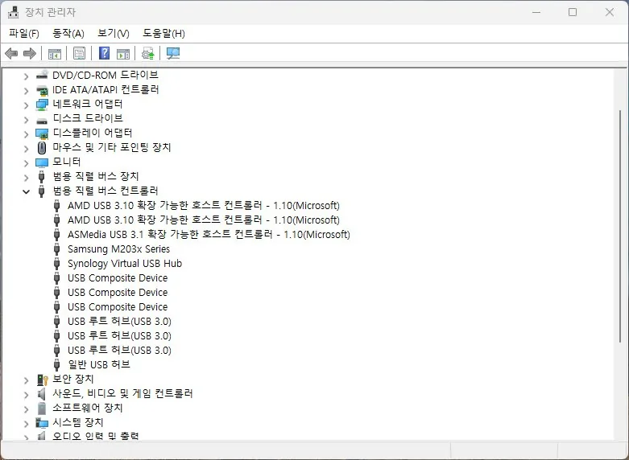

USB
USB 미인식 원인과 점검 순서
USB 장치가 아예 인식되지 않는 경우
USB 미인식은 포트가 물리적으로 손상됐을 수도 있지만, 전력 부족이나 드라이버 문제처럼 소프트웨어적인 원인도 섞여 있습니다. 그래서 단순히 다른 기기를 꽂아보는 것보다 더 넓게 봐야 합니다.
특히 허브, 전면 포트, 외장 하드처럼 전원 요구가 큰 장치에서 더 자주 나타납니다. 같은 장치가 다른 포트에서는 되는지부터 확인하면 원인을 빠르게 좁힐 수 있습니다.
이 증상은 장치 관리자 상태와 물리 포트를 함께 보아야 합니다.
이 가이드가 필요한 상황
- 특정 포트만 안 된다.
- 허브를 끼우면 더 자주 끊긴다.
- 장치 관리자에는 잠깐 보였다가 사라진다.
먼저 확인할 항목
- 다른 포트와 허브 제거 — 물리 포트 문제인지 전력 문제인지 가장 먼저 가를 수 있습니다. 허브를 빼고 본체의 다른 포트에 직접 꽂아 보세요.
- 장치 관리자 확인 — 인식은 했지만 드라이버가 실패한 경우가 있습니다. 알 수 없는 장치나 느낌표가 있는지 확인합니다. 범용 직렬 버스 컨트롤러 항목을 펼치면 연결된 USB 허브와 컨트롤러 목록을 볼 수 있습니다.

- 전력과 절전 설정 점검 — USB 절전 옵션이 장치를 끊어 버리는 경우가 있습니다. 전원 관리와 USB 선택적 절전 기능을 확인하세요.
원인을 더 정확히 나누는 방법
전력보다 드라이버일 수도 있음
외장 HDD나 캡처 장치처럼 전력을 많이 쓰는 장치일수록 포트 문제처럼 보이지만, 실제로는 드라이버와 전원 관리 설정이 원인인 경우도 많습니다.
확인 결과에 따른 다음 단계
- 다른 PC에서는 잘 될 때 — 장치 자체는 정상일 가능성이 높고, 현재 PC의 절전 설정이나 드라이버 문제를 먼저 봐야 합니다.
- 허브를 쓰고 있을 때 — 허브를 거칠수록 전력과 신호가 흔들릴 수 있으니, 먼저 본체 직결 테스트를 해보세요.
피해야 할 실수
- 포트만 바꾸고 장치 관리자를 안 보는 것
- 허브를 계속 거친 상태로 테스트하는 것
자주 묻는 질문
- 다른 PC에서는 되는데 내 PC에서만 안 됩니다. 그렇다면 포트, 전원 관리, 드라이버 설정 쪽 가능성이 큽니다. 장치 자체보다 현재 PC 설정을 먼저 보세요.
포트가 부족하거나 허브 자체가 노후됐다면 USB 허브 교체를 고려해 보세요.
이 포스팅은 쿠팡 파트너스 활동의 일환으로, 이에 따른 일정액의 수수료를 제공받습니다.
이 증상과 함께 나타나는 오류 코드
- 코드 10 · 이 장치를 시작할 수 없습니다 (코드 10)
- 코드 28 · 이 장치에 대한 드라이버가 설치되어 있지 않습니다 (코드 28)
- 코드 31 · 이 장치가 제대로 작동하고 있지 않습니다 (코드 31)
- 코드 34 · 장치에 필요한 설정 정보를 확인할 수 없습니다 (코드 34)
- 코드 41 · 드라이버 로드는 됐지만 장치를 찾을 수 없습니다 (코드 41)
최종 검토일: 2026-07-14